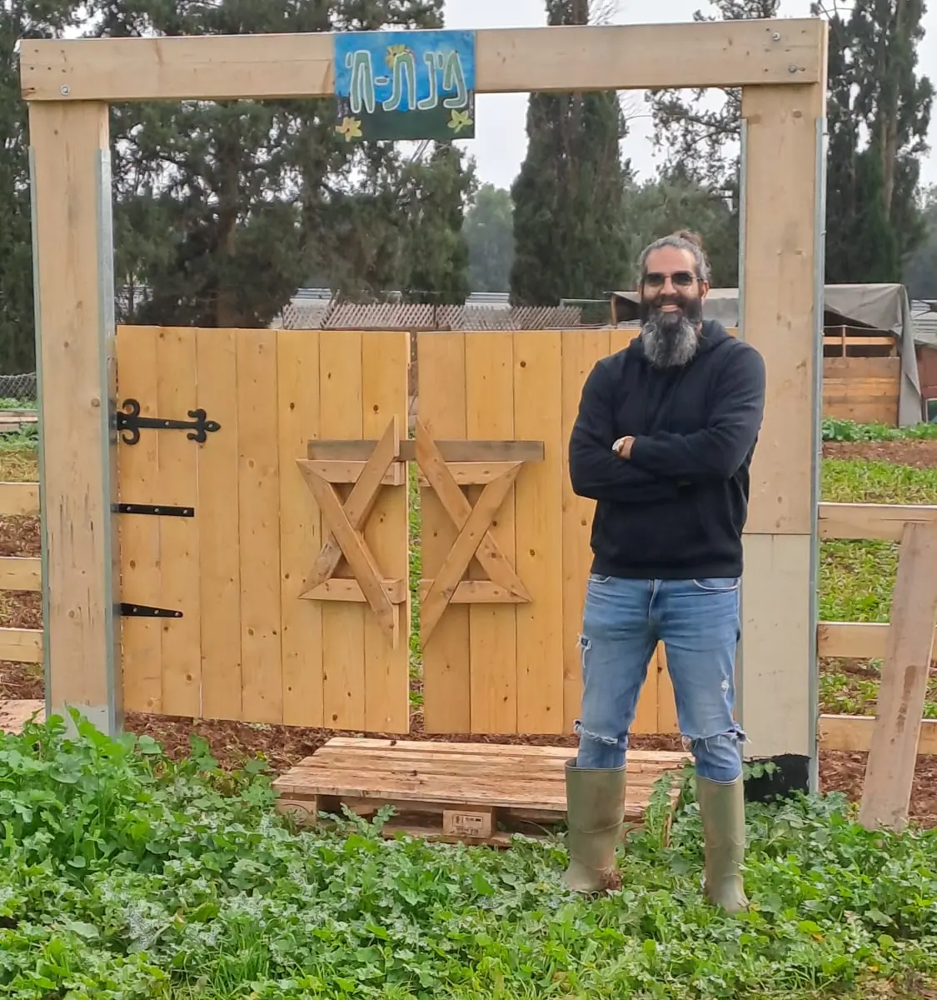
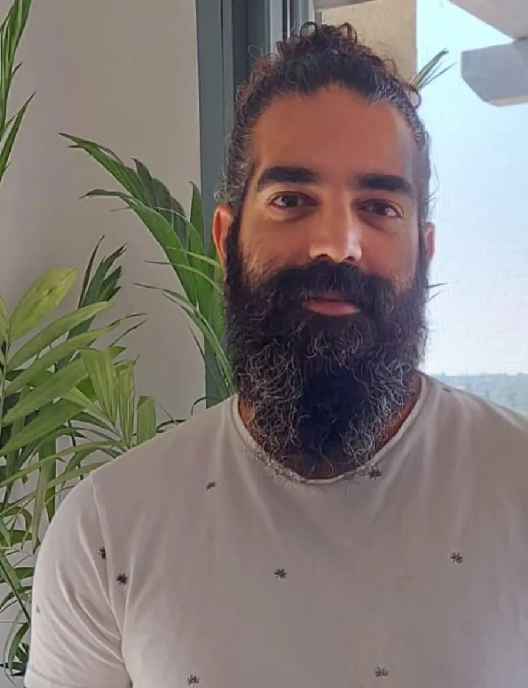
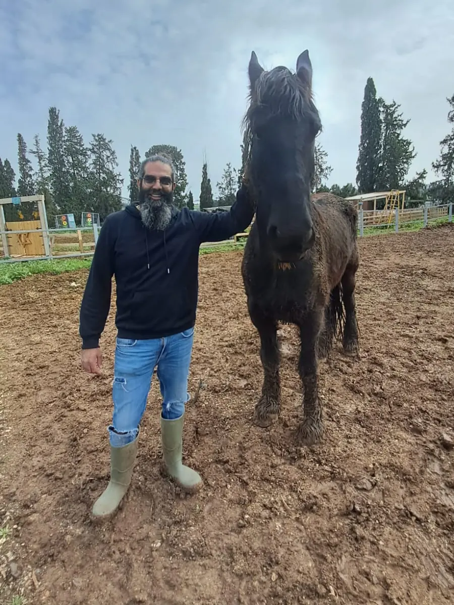

טיפול
לעצמי, לזוגיות או למשפחה
טיפול פרטני, טיפול בטראומה ובפוסט־טראומה, וטיפול זוגי ומשפחתי. בקליניקה בשדה יעקב או אונליין.
עובד סוציאלי קליני (MSW) · מטפל זוגי ומשפחתי
אני מלווה אנשים, זוגות ומשפחות בתקופות של טראומה, משבר ושינוי — בקליניקה במושב שדה יעקב או אונליין. לצד הטיפול אני מנהל את התחום הקליני בחוות מתניה, ובונה הרצאות ותהליכים לארגונים ולקהילות.


שלוש דרכים להתחיל
יש מי שמגיע בשביל עצמו, יש מי שמגיע בשביל מישהו שהוא אוהב, ויש מי שמחפש תוכן נכון לצוות או לקהילה. כל דרך מתחילה בשיחה.

טיפול
טיפול פרטני, טיפול בטראומה ובפוסט־טראומה, וטיפול זוגי ומשפחתי. בקליניקה בשדה יעקב או אונליין.

ארגונים ומסגרות
לחברות, לגופים ציבוריים, למערכת החינוך ולקהילות: חוסן, שחיקה, חזרה ממילואים ועוד — בהתאמה אישית.


01 — קצת עליי
לאורך השנים, העבודה עם אנשים, זוגות ומשפחות חיזקה אצלי את ההבנה הזו. הקשרים המשפחתיים, הזוגיות, העבודה והסביבה החברתית הם חלק משמעותי מהאופן שבו אנחנו מתמודדים עם קושי, משבר ושינוי.
לכן אני משלב עבודה טיפולית עם הנחיית קבוצות, הרצאות ופיתוח תהליכים לארגונים וקהילות. אני מאמין שבאמצעות קשר אנושי, עבודה מקצועית וראייה רחבה של האדם וסביבתו, אפשר ליצור תנאים לשינוי, לצמיחה ולחיים בעלי משמעות.
02 — טיפול וקליניקה
בקליניקה במושב שדה יעקב, ובמפגשים אונליין כשזה מה שמתאים.
מקום שקט לעצור, להבין מה קורה ולמצוא יחד דרך להתקדם, בקצב שלכם.
לפרטיםאחרי לחימה, אירוע קשה או אובדן. עבודה הדרגתית על תחושת ביטחון, שינה, קשרים ושגרה.
על טיפול בטראומהכשהקשר נשחק, כשמשבר מטלטל את הבית, או כשרוצים פשוט להצליח לדבר אחרת.
לפרטיםכלים מעשיים להורות בתקופות מורכבות: גיל ההתבגרות, משבר במשפחה או מילואים ממושכים.
לפרטיםחרדה, עומס רגשי, פרידה, אובדן או צומת בחיים. לא חייבים להגיע עם הגדרה מסודרת.
לפרטיםזה בסדר גמור. כתבו לי כמה מילים, ונחשוב יחד מה הצעד הנכון עבורכם.

03 — פוסט־טראומה
טראומה יכולה להגיע אחרי לחימה, פיגוע, תאונה או אובדן — לפעמים מיד, ולפעמים חודשים ושנים אחר כך. והיא משפיעה לא רק על מי שחווה אותה, אלא גם על הזוגיות, על ההורות ועל העבודה.


04 — חוות מתניה
לצד הקליניקה, אני שותף להקמת חוות מתניה — חווה שיקומית שמלווה לוחמים בדרך חזרה לחיים — ומנהל בה את התחום הקליני: פיתוח והובלה של תוכניות טיפול ושיקום.
העבודה בחווה, לצד העבודה בקליניקה, היא חלק מאותה תפיסה: שיקום קורה בתוך החיים עצמם, עם האנשים שסביב.
05 — ארגונים ומסגרות
הרצאה אחת, סדנה, סדרת מפגשים או תהליך מתמשך — כל פעילות נבנית לפי הצרכים של הקבוצה ושל הארגון.
חוסן ארגוני, שחיקה, חזרה לעבודה אחרי מילואים או משבר.
משרד הביטחון, אגפי שיקום, רשויות מקומיות ומסגרות תמיכה במשפחות.
צוותי חינוך, נוער בסיכון, הדרכת הורים ומחלקות רווחה.
קיבוצים, יישובים, מרכזים קהילתיים וקבוצות הורים, נשים וגברים.
מתכננים את שנת העבודה הקרובה? זה הזמן לשריין הרצאות, סדנאות ותהליכים — בזמן שמחלקות משאבי אנוש, רווחה והדרכה בונות את התקציב לשנה.

06 — תוכן ופודקאסטים
פודקאסטים, סרטונים ותוכן מקצועי על טראומה, זוגיות, משפחה וחוסן — כדי שתוכלו להכיר אותי ואת הדרך שבה אני חושב, עוד לפני שנפגשים.
07 — יצירת קשר
ספרו לי בכמה מילים מה מביא אתכם, ואחזור אליכם.
שם וטלפון מספיקים. כל השאר — רק אם בא לכם.
אחזור אליכם בהקדם. אם זה דחוף, אפשר תמיד להתקשר: 052-3931661
פונים בשם ארגון? לטופס הרצאות ופעילות לארגונים